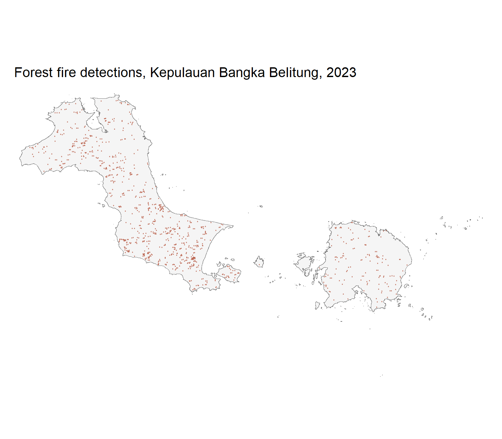
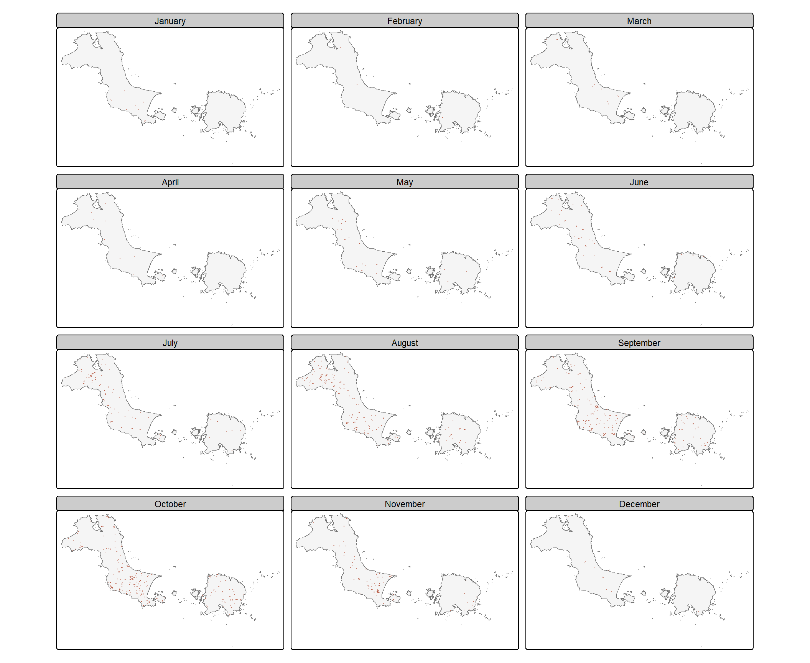
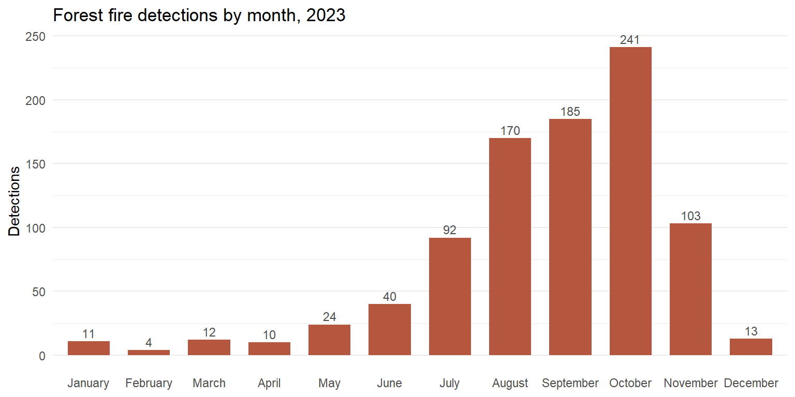
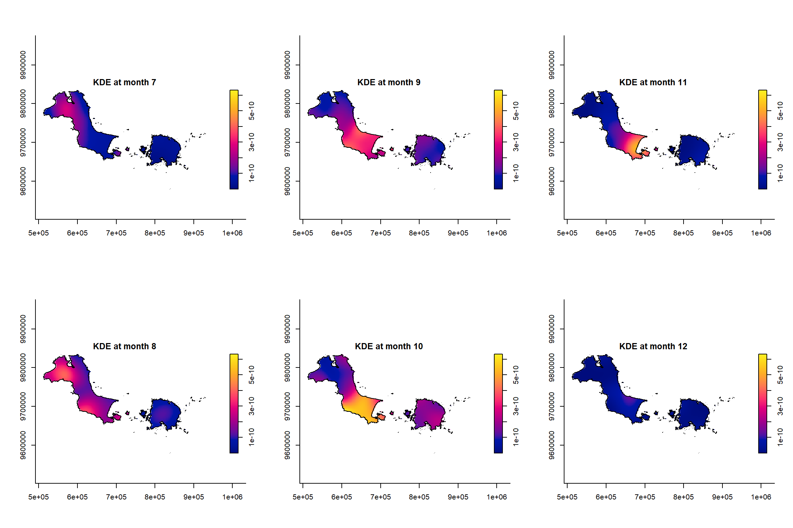
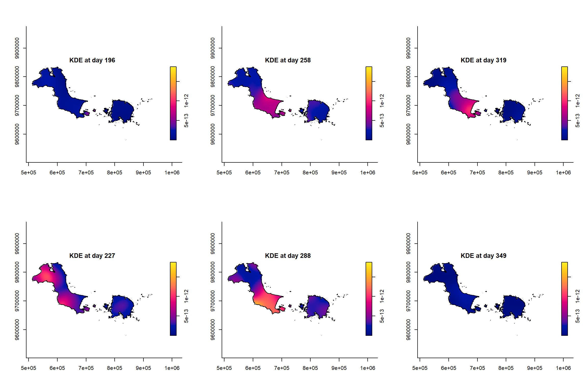
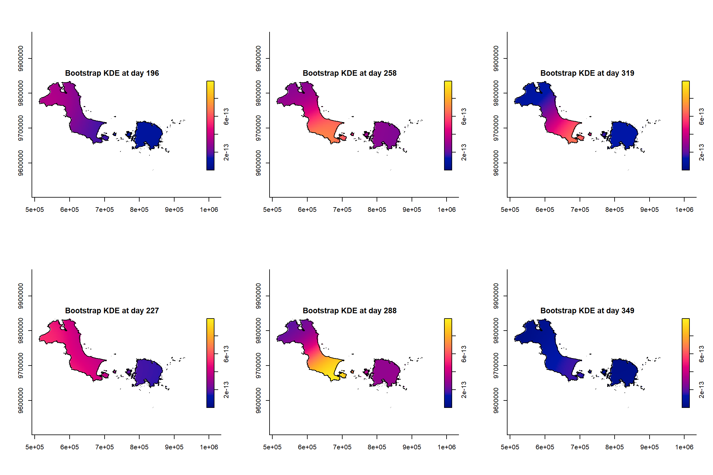
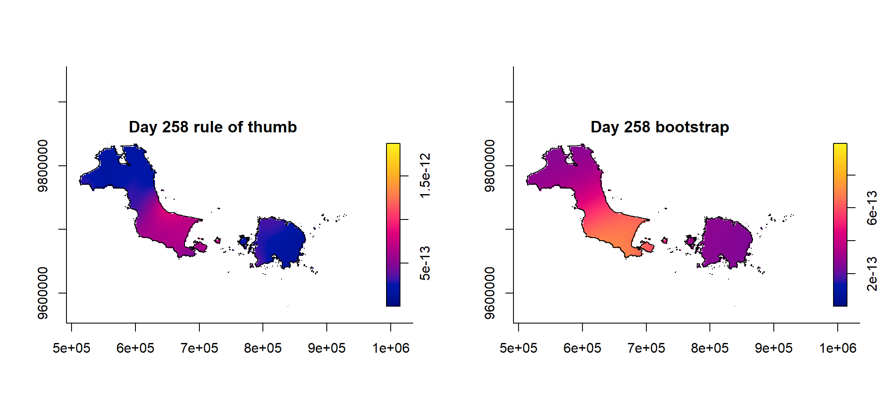

Show the code
pacman::p_load(sf, spatstat, sparr, tmap, stpp, tidyverse)Forest fires in Kepulauan Bangka Belitung, 2023
Meng Tingyu
September 10, 2026
September 10, 2026
The previous exercise treated every event as if it had no date attached to it. That is fine when the process is stable over the study period, but it is clearly wrong for something like forest fires, where the whole story is that fires happen in a particular season. A spatio-temporal point process keeps both coordinates, so each event carries a location and a time, and the intensity we estimate becomes a surface that changes as we move through the year.
The case study is forest fire detections in Kepulauan Bangka Belitung, Indonesia, for the whole of 2023. The two questions I am trying to answer are the ones set out in the chapter.
I work through three things in order. First a spatio-temporal kernel density estimate with month as the time mark, then the same estimate with day of year as the time mark, and finally the space-time inhomogeneous K function from the stpp package, which is the part that actually tests independence rather than just describing intensity.
Six packages, each doing one job. sf handles import and coordinate reference systems, spatstat provides the ppp and owin classes that everything else is built on, sparr does the spatio-temporal kernel smoothing, stpp does the K function analysis, tmap draws the maps and tidyverse does the data wrangling.
The chapter names raster among the six packages, but the solution chunk loads stpp instead and raster is never called anywhere in the workflow. I went with the code rather than the prose. stpp is genuinely needed later, raster is not, since nothing here touches gridded data directly.
Two files, both sitting under data/.
| File | What it is | Source |
|---|---|---|
forestfires.csv |
MODIS fire detections for 2023, one row per detection, with longitude, latitude and acquisition date, clipped to the province | Fire Information for Resource Management System |
Kepulauan_Bangka_Belitung.gpkg |
Village and sub-district (desa and kelurahan) boundaries of the province, cut out of the national BIG 10K layer | Indonesia Geospatial portal |
I kept the same folder convention as the first two exercises, so the boundary lives in data/geospatial/ and the csv lives in data/aspatial/. Copying the files into this exercise folder rather than pointing at Ex02 means the exercise still renders if I ever reorganise the earlier directories.
FIRMS serves archive requests by bounding box, and the smallest box that contains this province still takes in a slice of southern Sumatra, which burns heavily and would have dominated everything. The raw request for 2023 came back with over fifty thousand detections. I clipped them to the dissolved provincial boundary before saving, using the same geometry that becomes the analysis window later, so the events in data/ and the window they are analysed in are guaranteed to agree with each other.
remove = FALSE is the part that is easy to get wrong. Without it st_as_sf() consumes the two coordinate columns into the geometry, st_drop_geometry() then throws the geometry away, and what gets written out is a csv with no coordinates in it at all.
The portal does not publish this layer province by province. What is on offer is one national shapefile of every desa and kelurahan in Indonesia at 1 to 10000, which unpacks to well over a gigabyte and whose .shp alone is far past what GitHub will accept in a single file. So the boundary in data/ is not the download, it is a subset I cut out of it.
The cut was done once, outside the repository, by filtering on the province name field with a SQL query at read time rather than reading the whole layer into memory and filtering afterwards.
shp <- "D:/BATAS WILAYAH KELURAHAN-DESA 10K/Batas_Wilayah_KelurahanDesa_10K_AR.shp"
lyr <- "Batas_Wilayah_KelurahanDesa_10K_AR"
kbb <- st_read(shp, query = paste0(
'SELECT * FROM "', lyr, '" WHERE WADMPR = ', "'Kepulauan Bangka Belitung'"))
st_write(kbb, "data/geospatial/Kepulauan_Bangka_Belitung.gpkg", delete_dsn = TRUE)Handing the filter to GDAL matters here. The query is answered against the attribute table on disk and only the matching geometries are ever constructed, which is the difference between a few seconds and running out of memory. I wrote the result as a GeoPackage rather than a shapefile because it is one file instead of four, it has no ten character limit on field names, and there is no way to break it by renaming half of a set.
The first version of the import in the chapter is deliberately incomplete.
Reading layer `Kepulauan_Bangka_Belitung' from data source
`D:\mengtingyu88\geospatial-coursework\Hands-on_Ex\Hands-on_Ex03\data\geospatial\Kepulauan_Bangka_Belitung.gpkg'
using driver `GPKG'
Simple feature collection with 393 features and 26 fields
Geometry type: MULTIPOLYGON
Dimension: XY
Bounding box: xmin: 105.1085 ymin: -3.80161 xmax: 108.8718 ymax: -1.493399
Geodetic CRS: WGS 84Running that and then trying to use the result as a window does not work, and the reason is in the message it prints. The collection has 393 separate features, one per desa or kelurahan, and the CRS is WGS 84, so the coordinates are degrees. Neither of those is what an observation window needs.
Reading layer `Kepulauan_Bangka_Belitung' from data source
`D:\mengtingyu88\geospatial-coursework\Hands-on_Ex\Hands-on_Ex03\data\geospatial\Kepulauan_Bangka_Belitung.gpkg'
using driver `GPKG'
Simple feature collection with 393 features and 26 fields
Geometry type: MULTIPOLYGON
Dimension: XY
Bounding box: xmin: 105.1085 ymin: -3.80161 xmax: 108.8718 ymax: -1.493399
Geodetic CRS: WGS 84st_union() dissolves the 393 administrative units into one geometry, because a window is a region and not a collection of parcels, and because the internal boundaries between villages have nothing to do with where fires can occur. st_transform() moves the data to EPSG 32748, which is UTM zone 48 South and covers this part of Indonesia. That is the step that turns the units into metres, and without it every bandwidth and every distance in the rest of the exercise would be expressed in degrees, which for kernel smoothing is meaningless.
st_zm() is the interesting one, because on this particular file it does nothing at all.
[1] MULTIPOLYGON
18 Levels: GEOMETRY POINT LINESTRING POLYGON MULTIPOINT ... TRIANGLE[1] 2The chapter’s version of this boundary comes back as POLYGON with dimension XYZ, and every Z value in it is zero. as.owin() will not take a three dimensional geometry, so st_zm() is there to strip a coordinate that carries no information but blocks the conversion. The copy I cut out of the 2024 BIG layer is plain XY MULTIPOLYGON, so the call passes straight through and changes nothing.
I kept it in the pipeline anyway. It costs nothing on two dimensional input, and the same layer redownloaded or re-exported from a different tool could easily come back with the Z restored. Leaving it in means the code does not depend on a property of the file that nobody guaranteed.
The wider point is about which failures announce themselves. The Z dimension is the loud one, since as.owin() stops with an error. The projection is the quiet one, because leaving it out produces a perfectly valid window in degrees and no warning whatsoever, which is the same shape of trap as the CRS mismatch in Ex01. Order matters for the same reason, since unioning after projecting and unioning before projecting both return an answer and only one of them is the one I meant.
spatstat will not accept an sf object as an observation window, so the geometry has to be converted.
window: polygonal boundary
enclosing rectangle: [512066.8, 930756.9] x [9579205, 9834915] unitsThe enclosing rectangle is now reported in projected units, in the hundreds of thousands, which is the sanity check that the transform actually took effect. If the numbers had come back as small decimals in the range 105 to 109 I would know the CRS step had been skipped.
Worth recording, because it affects every count that follows. The chapter’s copy of this boundary reports a bounding box running east only as far as about 106.85 degrees, which covers Bangka and the small islands around it but stops short of Belitung. The subset I cut from the 2024 national layer runs out to about 108.87 degrees and so takes in the whole province, Belitung included.
Neither file is wrong, they are just different extracts sharing a name. The consequence is that my study region is roughly twice the area of the chapter’s, so my event count, my average intensity and my bandwidths will not match the numbers printed in the course material, and there is no point in trying to make them match. I went with the full province because that is what the province is, and because clipping the fire data to a window that silently drops half of it would be the worse error.
The csv arrives as plain coordinates with no spatial class, so st_as_sf() has to be told which columns hold the coordinates and which CRS those coordinates are in. MODIS output is longitude and latitude in WGS 84, hence 4326, and then the same transform to 32748 puts the events into the same projected space as the window.
Three time fields out of one date. Month_num is the numeric month used as the mark for the first density estimate, DayofYear is the finer time scale used for the second, and Month_fac is a factor used only for panel labels and axis text.
The obvious way to build the label column is month(acq_date, label = TRUE, abbr = FALSE), which is what the chapter uses. On my machine that returns Chinese month names, because my Windows locale is Chinese, and the facet titles and the bar chart axis came out in a language the rest of the document is not written in.
month.name is a built in character constant and is always English regardless of locale, so indexing it by the numeric month sidesteps the problem entirely. This is the same trap as weekdays() in the time series exercise last term, and the lesson is the same, which is that any function returning a name rather than a number is a candidate for silent localisation.
This is the reason the chapter converts the date at all. as.ppp() accepts marks that are numeric, character or factor, and a Date column is none of those as far as it is concerned, so passing acq_date straight through gives an error. Turning the date into an integer is not just convenience, it is a requirement of the class.
The second thing to check is that acq_date was actually parsed as a date in the first place. read_csv() normally recognises the ISO format that MODIS uses, but if the file has been opened and re-saved in Excel the column can come back as character, and then yday() fails. class(fire_sf$acq_date) before the mutate takes two seconds and saves a confusing error.
Rows: 905
Columns: 5
$ acq_date <date> 2023-01-10, 2023-01-10, 2023-01-10, 2023-01-10, 2023-01-10,…
$ DayofYear <dbl> 10, 10, 10, 10, 10, 10, 10, 10, 12, 12, 12, 40, 40, 49, 50, …
$ Month_num <dbl> 1, 1, 1, 1, 1, 1, 1, 1, 1, 1, 1, 2, 2, 2, 2, 3, 3, 3, 3, 3, …
$ Month_fac <fct> January, January, January, January, January, January, Januar…
$ geometry <POINT [m]> POINT (634310.2 9719333), POINT (661410.6 9683536), PO…Before smoothing anything I want to see the raw events, because a density surface will always look like something and it is easy to read structure into a plot that the underlying points do not support.

The province is an archipelago, with Bangka to the west and Belitung to the east, and the detections are not spread evenly across either island. There is an obvious concentration on Bangka, particularly through the middle and the south, while Belitung carries far fewer points.

The course code passes free.coords = FALSE and drop.units = TRUE to tm_facets(). On my machine, running tmap 4.4, free.coords behaves as expected but drop.units is no longer needed here, since there is only one polygon in the window after the union and there are no units to drop. This is the same v3 to v4 translation problem I ran into in the first two exercises, and the fix is usually to strip the argument rather than to look for a renamed version of it.
The panels make the seasonality obvious. The first half of the year is nearly empty, the pattern builds from July, and August through October carry the bulk of the year’s events. The counts in the next section put numbers on that.
The maps show where, but they are hard to read for how many, so a simple count makes the temporal shape explicit.
fire_sf %>%
st_drop_geometry() %>%
count(Month_fac) %>%
ggplot(aes(x = Month_fac, y = n)) +
geom_col(fill = "#B5563F", width = 0.7) +
geom_text(aes(label = n), vjust = -0.4, size = 3.2, colour = "grey30") +
labs(title = "Forest fire detections by month, 2023",
x = NULL, y = "Detections") +
theme_minimal(base_size = 11) +
theme(panel.grid.major.x = element_blank())
# A tibble: 1 × 4
n first_day median_day last_day
<int> <dbl> <dbl> <dbl>
1 905 10 258 360905 detections in total, with a median day of year of 258, which falls in September. The first quartile sits at day 220 and the third at day 288, so half of the year’s fires happen inside a window of about 10 weeks running from 08 August to 15 October. That is the dry season, and it means any density estimate that ignores time is averaging a very busy quarter against eight quiet months.
Doing the counts before the smoothing changed how I read everything afterwards. A spatial-only KDE of these 905 points would have produced a perfectly reasonable looking hotspot map, and I would have had no way of knowing from the map itself that almost the entire surface is being driven by three months of the year. The temporal margin is cheap to compute and it sets the expectation for what the spatio-temporal estimate should show.
as.ppp() only wants the mark column and the geometry, so everything else has to go first.
Marked planar point pattern: 905 points
marks are numeric, of storage type 'double'
window: rectangle = [521564.1, 862416.4] x [9642001, 9828767] unitsMarked planar point pattern: 905 points
Average intensity 1.421623e-08 points per square unit
Coordinates are given to 10 decimal places
marks are numeric, of type 'double'
Summary:
Min. 1st Qu. Median Mean 3rd Qu. Max.
1.000 8.000 9.000 8.644 10.000 12.000
Window: rectangle = [521564.1, 862416.4] x [9642001, 9828767] units
(340900 x 186800 units)
Window area = 63659700000 square unitsThe summary confirms the marks are numeric and run from 1 to 12, with a median of 9 and a mean of 8.64, which is the same seasonal peak seen in the bar chart, expressed differently.
No duplicates, so unlike the childcare centre data in Ex02 there is no need to jitter anything. That makes sense given MODIS detections are pixel centroids recorded at particular acquisition times, and two fires being flagged at exactly the same pixel on exactly the same date would be unusual.
At this point the ppp still sits inside a rectangle. Attaching the real window is what makes the intensity estimate meaningful, because intensity is events per unit area and the rectangle contains a great deal of sea.
I print the pattern itself rather than calling summary() on it. The chapter uses summary(), and on a single island that is fine, but this window is an archipelago and summary.owin lists every component polygon with its vertex count and area, which here means hundreds of lines of table in the middle of the document. The two numbers I actually want are cheaper to compute directly.
Marked planar point pattern: 905 points
marks are numeric, of storage type 'double'
window: polygonal boundary
enclosing rectangle: [512066.8, 930756.9] x [9579205, 9834915] units polygons vertices frame_over_window
536.00 147452.00 3.81 All 905 points survive the clip, so nothing in the file falls outside the province, which confirms that my own filtering step did what it was supposed to. What does change is the denominator. The window resolves into 536 separate polygons carrying 147,452 vertices between them, which is what a province made of two large islands and a great many small ones looks like once the administrative lines are dissolved away. Its total area is about 3.8 times smaller than the bounding rectangle, so average intensity rises by that factor. Nothing about the pattern changed, only the area we are dividing by.
Spatiotemporal Kernel Density Estimate
Bandwidths
h = 19110 (spatial)
lambda = 0.0264 (temporal)
No. of observations
905
Spatial bound
Type: polygonal
2D enclosure: [512066.8, 930756.9] x [9579205, 9834915]
Temporal bound
[1, 12]
Evaluation
128 x 128 x 12 trivariate lattice
Density range: [2.515909e-36, 6.317034e-10]Two bandwidths come back, a spatial one and a temporal one. The spatial bandwidth is about 19.1 kilometres, which against a province spanning over four hundred kilometres from end to end is a fairly local scale. The temporal bandwidth is 0.0264, and since the time unit here is a month, that works out at roughly 0.8 days.
This surprised me and it is worth being explicit about. Because the marks are integers, all the events in August sit at exactly t equals 8, and a kernel this narrow does not reach anywhere near t equals 7 or t equals 9. The result is that each monthly slice is essentially a plain spatial KDE of that month’s events, with almost no borrowing of information from neighbouring months.
That is not a bug in spattemp.density(), it is a consequence of feeding it a coarsely discretised time variable. The bandwidth rule sees twelve tied values and concludes that very little smoothing is required. It also means the twelve month version is not really a spatio-temporal estimate in any interesting sense, and the day of year version in the next section is the one that actually smooths across time.

fix.range = TRUE is doing important work in that loop. It holds the colour scale constant across all six panels, so a warm colour in one panel means the same density as a warm colour in another. Without it each panel is scaled to its own maximum and November would look as active as September, which would be badly misleading. override.par = FALSE stops the plot method from resetting the panel layout on each call, which is what allows par(mfcol = c(2, 3)) to hold for all six.
Reading the six panels, July is already showing raised intensity in central and southern Bangka. August and September are the peak, with the strongest values concentrated in the southern half of Bangka and a secondary area appearing on Belitung. October is still elevated but the surface is flatter and the focus has shifted slightly. November is not as quiet as the earlier panels led me to expect, with 103 detections, so there is a secondary period of activity after the main season closes, and only December really empties out at 13.
Same procedure, finer time mark.
Marked planar point pattern: 905 points
marks are numeric, of storage type 'double'
window: polygonal boundary
enclosing rectangle: [512066.8, 930756.9] x [9579205, 9834915] units Min. 1st Qu. Median Mean 3rd Qu. Max.
10.0 220.0 258.0 247.8 288.0 360.0 The marks now range from day 10 to day 360 with a mean of 247.8, and the window is identical to before because only the mark changed.
Spatiotemporal Kernel Density Estimate
Bandwidths
h = 19110 (spatial)
lambda = 6.4541 (temporal)
No. of observations
905
Spatial bound
Type: polygonal
2D enclosure: [512066.8, 930756.9] x [9579205, 9834915]
Temporal bound
[10, 360]
Evaluation
128 x 128 x 351 trivariate lattice
Density range: [2.75665e-27, 1.874119e-12]The spatial bandwidth is unchanged at 19.1 kilometres, which it should be, since the spatial configuration of the points is exactly the same. The temporal bandwidth is now 6.45 days, so the estimate is pooling roughly a fortnight of activity around each evaluation time. That is a real amount of temporal smoothing and it is already far more useful than the near-zero bandwidth the monthly version produced, although the next section shows that it is still narrower than it should be.
The evaluation lattice is also very different, with one slice per day instead of one per month, and the maximum density drops by more than two orders of magnitude against the monthly estimate. The two numbers are not comparable, because a spatio-temporal density integrates to one over space and time, and spreading that over the days of the year instead of twelve months necessarily makes the values smaller. Comparing raw density values across the two estimates would be a mistake.
The chapter shows plot(kde_yday) with nothing else. In an interactive session that runs an animation through one time slice per day of the study period, pausing between frames, which is a reasonable thing to look at once. Inside a Quarto render it is not, because every frame becomes a separate figure in the output and the document balloons.
I hit this the first time I rendered and killed the process partway through. The fix is to name the days I actually want, exactly as the monthly section does, and let the animation stay in the console.

I took the middle of each month from July to December and converted those dates to day of year, which lines up with the monthly panels above and makes the two sets comparable. The picture is consistent with the monthly version but smoother, and the transition between the active period and the quiet one is now visible as a gradual decay rather than as a step between panels. The middle panel, day 258, carries the highest values, and by day 319 the surface has almost flattened out.
Everything above used the bandwidths spattemp.density() chose on its own, which are rule of thumb values. sparr also provides BOOT.spattemp(), which selects both bandwidths by bootstrap estimation of the mean integrated squared error, returning one isotropic scalar bandwidth for space and one scalar bandwidth for time. On a strongly seasonal process a rule of thumb is a starting point rather than an answer, so this is worth doing properly.
Initialising...Done.
Optimising...
h = 19110 ; lambda = 14.87514
h = 21021 ; lambda = 14.87514
h = 19110 ; lambda = 1925.875
h = 19587.75 ; lambda = 970.375
h = 19826.62 ; lambda = 492.625
h = 19946.06 ; lambda = 253.7501
h = 20005.78 ; lambda = 134.3126
h = 20035.64 ; lambda = 74.59388
h = 20050.57 ; lambda = 44.73451
h = 20058.03 ; lambda = 29.80482
h = 20061.76 ; lambda = 22.33998
h = 21972.76 ; lambda = 22.33998
h = 23404.15 ; lambda = 26.0724
h = 22444.91 ; lambda = 33.53725
h = 21376.98 ; lambda = 19.54067
h = 24719.36 ; lambda = 23.27309
h = 27048.16 ; lambda = 23.73964
h = 29075.33 ; lambda = 30.27138
h = 27150.74 ; lambda = 27.5887
h = 32719.34 ; lambda = 27.93861
h = 37376.93 ; lambda = 28.87172
h = 35349.76 ; lambda = 22.33998
h = 38486.98 ; lambda = 18.37428
h = 48815.75 ; lambda = 23.50636
h = 43373.85 ; lambda = 23.56468
h = 44483.9 ; lambda = 13.06725
h = 42707.16 ; lambda = 17.01837
h = 47594.03 ; lambda = 22.20876
h = 45317.27 ; lambda = 21.25014
h = 44650.57 ; lambda = 14.70383
h = 43693.03 ; lambda = 21.34947
h = 46303.15 ; lambda = 25.58125
h = 43606.15 ; lambda = 19.15909
h = 45230.39 ; lambda = 19.05976
h = 45999.07 ; lambda = 17.91491
h = 43519.28 ; lambda = 16.9687
h = 44867.77 ; lambda = 20.17978
Done. h lambda
45230.39047 19.05976 Two practical points. The routine is stochastic, so without set.seed() the optimiser lands on slightly different values every run and the numbers quoted in the prose stop matching the numbers in the output. Seeding it is not optional in a document that is meant to be reproducible.
The second point is runtime. This is a bootstrap over 905 events on a lattice with one slice per day and it took several minutes on my machine, with the optimiser printing every candidate pair as it goes. Because the site renders with freeze enabled it only pays that cost once, but it is worth knowing before assuming the render has hung.
The optimiser starts from the rule of thumb pair, throws lambda out to an enormous value on an early probe, and then works its way back down, wandering through both coordinates before settling. What it lands on is h of about 45.2 kilometres and lambda of about 19.1 days. Both are larger than the rule of thumb pair, by factors of about 2.4 in space and 3 in time.
I had expected the two to disagree in direction, and they do not. The bootstrap says the rule of thumb undersmoothed in both dimensions at once, and the spatial correction is the larger surprise, since a bandwidth of 45.2 kilometres is a substantial fraction of the width of Bangka itself. What that amounts to is a judgement about how much structure 905 events spread across a province this size can actually support. The rule of thumb was resolving features that, on a bootstrap estimate of the mean integrated squared error, are more likely to be noise than signal.
Spatiotemporal Kernel Density Estimate
Bandwidths
h = 45200 (spatial)
lambda = 19 (temporal)
No. of observations
905
Spatial bound
Type: polygonal
2D enclosure: [512066.8, 930756.9] x [9579205, 9834915]
Temporal bound
[10, 360]
Evaluation
128 x 128 x 351 trivariate lattice
Density range: [5.296593e-16, 9.925739e-13]The values are rounded off, to the nearest hundred metres and the nearest day, which is what the chapter does and which is reasonable given the optimiser is only accurate to within its own tolerance anyway. Carrying five significant figures on a bootstrapped bandwidth would suggest a precision that is not there.
The course code reassigns the result to kde_yday, which replaces the rule of thumb estimate computed in the previous section. I kept the two under separate names so that both remain in memory and the comparison below actually works. If you follow the chapter literally and then scroll back up, the earlier summary and the object no longer agree with each other, which is the kind of thing that makes a rendered document quietly inconsistent with itself.
Comparing the two summaries, the maximum density roughly halves, which is what spreading the same total mass over a wider kernel does, and the minimum rises by more than ten orders of magnitude. That second number is the more telling one. Under the narrow bandwidths the quiet parts of the year and the far corners of the province were being assigned effectively zero density, because nothing was close enough in either space or time to contribute anything at all. With the wider pair every point now borrows something from its surroundings, so the surface never collapses to nothing.
The same warning about plot() applies here, since this object has the same one slice per day lattice, so I name the days again rather than letting it animate.

Set against the six panels from the previous section, the surfaces are broader and the separate cores have merged into larger regions, which is the wider spatial bandwidth doing its work, and the change from panel to panel is gentler, which is the wider temporal one. The peak sits in the same place and the same part of the year, so the substantive answer has not moved. What has changed is how much detail I am willing to believe in it, and the answer is a good deal less.

Side by side at the same day the difference is clear enough. The left panel resolves several distinct cores with cooler ground between them, while the right panel merges them into one broad region and the outlying islands are no longer separated from the main mass. One caveat on reading this pair, fix.range holds the colour scale constant within each object across its own time slices, and it does not harmonise the scale between two different objects, so the two panels should be compared on shape and not on colour.
Two separate lessons landed in this section of the exercise, and they point in different directions.
The first is that the gap between the monthly and the daily estimates was entirely about how I encoded time, not about the fires. Same 905 events, same locations, same spatial bandwidth, and two very different temporal resolutions purely because one version rounded every date to a month first. Aggregating a continuous variable before handing it to a smoother throws away exactly the information the smoother exists to use, and the bandwidth selector then quietly agrees that there is nothing left to smooth.
The second is that even with the time variable encoded properly, the default bandwidths were too narrow in both dimensions, and by a wide margin in space. I would not have caught that by eye, because the rule of thumb surface looked entirely plausible on its own, and if anything it looked more informative, since more structure reads as more insight. It only became visible once there was a second surface to hold it against. That is an argument for running the bootstrap as a matter of course rather than treating it as an optional refinement, and a caution against trusting a hotspot map because it has a lot of hotspots on it.
Everything so far describes intensity. None of it answers the first research question, which is about independence, and for that I need a second order summary. The stpp package provides the space-time inhomogeneous K function, which compares the observed number of events within a spatial distance u and a temporal lag v against what would be expected if space and time were independent of one another.
stpp does not read sf objects, so the coordinates have to be pulled out into a plain data frame.
The chapter text refers to as.3dpoint() in the sentence above the code chunk while the code chunk itself calls as.3dpoints(). The plural form is the one that exists. Small thing, but it cost me a minute of wondering whether the package had failed to load properly.
The other detail in that step is that t has to be an integer. This is why DayofYear is used rather than the date, and it is the same constraint that applied to the ppp marks earlier.
The default plot gives the spatial configuration alongside the temporal one, with the time dimension shown as a cumulative count. The cumulative curve is the clearest single picture of the seasonality in this whole exercise, flat until around day 180, steep from day 200 to day 300, and flat again after that.
The contour plot shows the estimated K function over a grid of spatial distances u on one axis and temporal lags v on the other. The version below plots the departure from the theoretical value under independence, which I find easier to read because the reference level is zero rather than a curved surface.
The guide gives the rule for interpreting this, and the two cases are straightforward. High values at small u and small v mean events are occurring close together in both space and time, which is clustering. Contours that are flat or low indicate something closer to a random arrangement at those distances.
What I see here is that the values are highest in the bottom left corner of the plot, at the shortest spatial distances and the shortest temporal lags, and that they fall away as either axis increases. The contour lines are packed tightly near the origin and spread out further along, which says the clustering is concentrated at short range and decays fairly quickly rather than persisting across the whole study region and the whole year. Reading along the u axis at a fixed small v, the excess is substantial for the first part of the range and then thins out. Reading along the v axis at a fixed small u, the same shape appears, so fires that are near each other in space also tend to be near each other in time.
That is the answer to both research questions, and it is consistent with the density surfaces. The events are neither spatially nor spatio-temporally independent, and the clustering sits in southern and central Bangka during the August to October window.
This is the limitation I would flag if I were handing this analysis to anyone. When s.region is not supplied, STIKhat() falls back on a rectangle derived from the coordinates, and for an archipelago that rectangle contains a large amount of sea where a fire can never occur. Any K function estimate compares the observed pattern against what would be expected under independence within the region it thinks it is working in, so an inflated region inflates the apparent clustering.
Passing the real boundary is possible in principle, since STIKhat() accepts a two column matrix of polygon vertices, but the dissolved boundary here is 536 disconnected polygons carrying 147,452 vertices, and the function expects a single simple polygon. Simplifying it heavily with st_simplify() would be the practical route. I have not done that here because it changes the region enough that the result would no longer be comparable to the chapter’s, but the direction of the bias is clear, and I would expect the true departure from independence to be smaller than what this plot shows.
The same criticism does not apply to the sparr estimates earlier, since those were clipped to kbb_owin properly.
The KDE surfaces and the K function are answering different questions and I had been treating them as interchangeable. A density map tells me where the events are concentrated, and it will produce a hotspot even if the process is completely random, because random patterns have lumps in them. The K function is the part that asks whether the lumps are more pronounced than randomness would produce. Ex02 made that point for the purely spatial case, and this chapter extends it to time, where the intuition is less obvious because a seasonal peak feels like it must be clustering when in fact it could just be a non-constant background rate.
On the first question, the fire locations are not independent, either spatially or spatio-temporally. The K function sits above the independence reference across short distances and short lags, and the departure is largest where both are small.
On the second question, the clustering is concentrated on Bangka rather than Belitung, with the strongest and most persistent intensity in the central and southern parts of the island, and it is concentrated in time between roughly day 200 and day 300, which runs from the middle of July to the end of October. All three density estimates put the single most active point in the same part of September and the same part of Bangka. The bootstrap version smooths the cores together rather than relocating them, which is the reassuring outcome, since the answer would be much weaker if the position of the peak depended on the bandwidth.
The caveat attached to all of this is the region problem described above. The location and timing of the clustering are robust, since they come from the density surfaces, which were clipped to the correct window. The strength of the departure from independence is the part I would not want to quote without redoing the K function on a properly specified region.
Two things. I would encode time as day of year from the beginning and run BOOT.spattemp() before drawing anything, since the monthly estimate turned out to be an artefact of aggregation and the rule of thumb estimate turned out to be undersmoothed in both dimensions, and keeping all three in the document is only worthwhile because the contrast is instructive. And I would spend the time simplifying the boundary polygon down to something STIKhat() will accept, because a second order statistic computed on the wrong region is not really a second order statistic.
Written in Quarto and executed in R. Every figure and table is generated at render time from the files in data/, and no numbers are typed by hand into the prose.
R version 4.5.3 (2026-03-11 ucrt)
Platform: x86_64-w64-mingw32/x64
Running under: Windows 11 x64 (build 26200)
Matrix products: default
LAPACK version 3.12.1
locale:
[1] LC_COLLATE=Chinese (Simplified)_China.utf8
[2] LC_CTYPE=Chinese (Simplified)_China.utf8
[3] LC_MONETARY=Chinese (Simplified)_China.utf8
[4] LC_NUMERIC=C
[5] LC_TIME=Chinese (Simplified)_China.utf8
time zone: Asia/Shanghai
tzcode source: internal
attached base packages:
[1] tcltk stats graphics grDevices utils datasets methods
[8] base
other attached packages:
[1] lubridate_1.9.5 forcats_1.0.1 stringr_1.6.0
[4] dplyr_1.2.1 purrr_1.2.2 readr_2.2.0
[7] tidyr_1.3.2 tibble_3.3.1 ggplot2_4.0.2
[10] tidyverse_2.0.0 stpp_2.0-8 splancs_2.01-45
[13] sp_2.2-1 rpanel_1.1-6.3 tmap_4.4
[16] sparr_2.3-16 spatstat_3.6-2 spatstat.linnet_3.5-3
[19] spatstat.model_3.7-2 rpart_4.1.24 spatstat.explore_3.8-2
[22] nlme_3.1-168 spatstat.random_3.5-1 spatstat.geom_3.8-2
[25] spatstat.univar_3.2-0 spatstat.data_3.1-9 sf_1.1-1
loaded via a namespace (and not attached):
[1] DBI_1.3.0 deldir_2.0-4 gridExtra_2.3
[4] tmaptools_3.3 s2_1.1.11 logger_0.4.2
[7] rlang_1.2.0 magrittr_2.0.5 otel_0.2.0
[10] e1071_1.7-17 compiler_4.5.3 mgcv_1.9-4
[13] png_0.1-9 vctrs_0.7.3 crayon_1.5.3
[16] pkgconfig_2.0.3 wk_0.9.5 fastmap_1.2.0
[19] labeling_0.4.3 lwgeom_0.2-16 leafem_0.2.5
[22] rmarkdown_2.31 tzdb_0.5.0 spacesXYZ_1.6-0
[25] bit_4.6.0 xfun_0.57 jsonlite_2.0.0
[28] goftest_1.2-3 spatstat.utils_3.2-4 terra_1.9-27
[31] parallel_4.5.3 R6_2.6.1 stringi_1.8.7
[34] RColorBrewer_1.1-3 stars_0.7-2 Rcpp_1.1.1-1.1
[37] iterators_1.0.14 knitr_1.51 tensor_1.5.1
[40] base64enc_0.1-6 pacman_0.5.1 timechange_0.4.0
[43] Matrix_1.7-4 splines_4.5.3 tidyselect_1.2.1
[46] rstudioapi_0.18.0 abind_1.4-8 yaml_2.3.12
[49] maptiles_0.11.0 doParallel_1.0.17 codetools_0.2-20
[52] misc3d_0.9-2 lattice_0.22-9 leafsync_0.1.0
[55] withr_3.0.2 S7_0.2.1-1 evaluate_1.0.5
[58] units_1.0-1 proxy_0.4-29 polyclip_1.10-7
[61] pillar_1.11.1 KernSmooth_2.23-26 foreach_1.5.2
[64] generics_0.1.4 vroom_1.7.1 hms_1.1.4
[67] scales_1.4.0 class_7.3-23 glue_1.8.1
[70] tools_4.5.3 leaflegend_1.2.8 data.table_1.18.2.1
[73] rgl_1.3.36 XML_3.99-0.23 grid_4.5.3
[76] crosstalk_1.2.2 colorspace_2.1-2 cols4all_0.10
[79] raster_3.6-32 cli_3.6.6 spatstat.sparse_3.2-0
[82] plot3D_1.4.2 gtable_0.3.6 digest_0.6.39
[85] classInt_0.4-11 htmlwidgets_1.6.4 farver_2.1.2
[88] htmltools_0.5.9 lifecycle_1.0.5 leaflet_2.2.3
[91] bit64_4.6.0-1 microbenchmark_1.5.0 ---
title: "Hands-on Ex03: Spatio-Temporal Point Patterns Analysis"
subtitle: "Forest fires in Kepulauan Bangka Belitung, 2023"
author: "Meng Tingyu"
date: "September 10, 2026"
date-modified: "last-modified"
format:
html:
toc: true
toc-depth: 3
code-fold: true
code-summary: "Show the code"
code-tools: true
fig-align: center
execute:
eval: true
echo: true
warning: false
message: false
freeze: true
---
## What this exercise is about
The previous exercise treated every event as if it had no date attached to it. That is fine when the process is stable over the study period, but it is clearly wrong for something like forest fires, where the whole story is that fires happen in a particular season. A spatio-temporal point process keeps both coordinates, so each event carries a location and a time, and the intensity we estimate becomes a surface that changes as we move through the year.
The case study is forest fire detections in Kepulauan Bangka Belitung, Indonesia, for the whole of 2023. The two questions I am trying to answer are the ones set out in the chapter.
1. Are the locations of forest fire in Kepulauan Bangka Belitung spatially and spatio-temporally independent?
2. If they are not, where and when do the observed fire locations tend to cluster?
I work through three things in order. First a spatio-temporal kernel density estimate with month as the time mark, then the same estimate with day of year as the time mark, and finally the space-time inhomogeneous K function from the **stpp** package, which is the part that actually tests independence rather than just describing intensity.
## Setting up
### Packages
```{r}
#| output: false
pacman::p_load(sf, spatstat, sparr, tmap, stpp, tidyverse)
```
Six packages, each doing one job. **sf** handles import and coordinate reference systems, **spatstat** provides the `ppp` and `owin` classes that everything else is built on, **sparr** does the spatio-temporal kernel smoothing, **stpp** does the K function analysis, **tmap** draws the maps and **tidyverse** does the data wrangling.
::: {.callout-note}
## The package list in the chapter text and the package list in the code do not match
The chapter names **raster** among the six packages, but the solution chunk loads **stpp** instead and **raster** is never called anywhere in the workflow. I went with the code rather than the prose. **stpp** is genuinely needed later, **raster** is not, since nothing here touches gridded data directly.
:::
### The data
Two files, both sitting under `data/`.
| File | What it is | Source |
|------|-----------|--------|
| `forestfires.csv` | MODIS fire detections for 2023, one row per detection, with longitude, latitude and acquisition date, clipped to the province | Fire Information for Resource Management System |
| `Kepulauan_Bangka_Belitung.gpkg` | Village and sub-district (desa and kelurahan) boundaries of the province, cut out of the national BIG 10K layer | Indonesia Geospatial portal |
I kept the same folder convention as the first two exercises, so the boundary lives in `data/geospatial/` and the csv lives in `data/aspatial/`. Copying the files into this exercise folder rather than pointing at Ex02 means the exercise still renders if I ever reorganise the earlier directories.
::: {.callout-note}
## The fire csv is also a subset I made myself
FIRMS serves archive requests by bounding box, and the smallest box that contains this province still takes in a slice of southern Sumatra, which burns heavily and would have dominated everything. The raw request for 2023 came back with over fifty thousand detections. I clipped them to the dissolved provincial boundary before saving, using the same geometry that becomes the analysis window later, so the events in `data/` and the window they are analysed in are guaranteed to agree with each other.
```r
keep <- raw %>%
st_as_sf(coords = c("longitude", "latitude"), crs = 4326, remove = FALSE) %>%
st_filter(kbb_union) %>%
st_drop_geometry()
```
`remove = FALSE` is the part that is easy to get wrong. Without it `st_as_sf()` consumes the two coordinate columns into the geometry, `st_drop_geometry()` then throws the geometry away, and what gets written out is a csv with no coordinates in it at all.
:::
::: {.callout-note}
## Getting the boundary out of a national file
The portal does not publish this layer province by province. What is on offer is one national shapefile of every desa and kelurahan in Indonesia at 1 to 10000, which unpacks to well over a gigabyte and whose `.shp` alone is far past what GitHub will accept in a single file. So the boundary in `data/` is not the download, it is a subset I cut out of it.
The cut was done once, outside the repository, by filtering on the province name field with a SQL query at read time rather than reading the whole layer into memory and filtering afterwards.
```r
shp <- "D:/BATAS WILAYAH KELURAHAN-DESA 10K/Batas_Wilayah_KelurahanDesa_10K_AR.shp"
lyr <- "Batas_Wilayah_KelurahanDesa_10K_AR"
kbb <- st_read(shp, query = paste0(
'SELECT * FROM "', lyr, '" WHERE WADMPR = ', "'Kepulauan Bangka Belitung'"))
st_write(kbb, "data/geospatial/Kepulauan_Bangka_Belitung.gpkg", delete_dsn = TRUE)
```
Handing the filter to GDAL matters here. The query is answered against the attribute table on disk and only the matching geometries are ever constructed, which is the difference between a few seconds and running out of memory. I wrote the result as a GeoPackage rather than a shapefile because it is one file instead of four, it has no ten character limit on field names, and there is no way to break it by renaming half of a set.
:::
## Preparing the study area
### Reading the boundary
The first version of the import in the chapter is deliberately incomplete.
```{r}
kbb <- st_read("data/geospatial/Kepulauan_Bangka_Belitung.gpkg")
```
Running that and then trying to use the result as a window does not work, and the reason is in the message it prints. The collection has `r nrow(kbb)` separate features, one per desa or kelurahan, and the CRS is WGS 84, so the coordinates are degrees. Neither of those is what an observation window needs.
```{r}
kbb_sf <- st_read("data/geospatial/Kepulauan_Bangka_Belitung.gpkg") %>%
st_union() %>%
st_zm(drop = TRUE, what = "ZM") %>%
st_transform(crs = 32748)
```
`st_union()` dissolves the `r nrow(kbb)` administrative units into one geometry, because a window is a region and not a collection of parcels, and because the internal boundaries between villages have nothing to do with where fires can occur. `st_transform()` moves the data to EPSG 32748, which is UTM zone 48 South and covers this part of Indonesia. That is the step that turns the units into metres, and without it every bandwidth and every distance in the rest of the exercise would be expressed in degrees, which for kernel smoothing is meaningless.
`st_zm()` is the interesting one, because on this particular file it does nothing at all.
```{r}
st_geometry_type(kbb)[1]
st_dimension(kbb)[1]
```
::: {.callout-important}
## The step that fixes a problem my copy of the data does not have
The chapter's version of this boundary comes back as POLYGON with dimension XYZ, and every Z value in it is zero. `as.owin()` will not take a three dimensional geometry, so `st_zm()` is there to strip a coordinate that carries no information but blocks the conversion. The copy I cut out of the 2024 BIG layer is plain XY MULTIPOLYGON, so the call passes straight through and changes nothing.
I kept it in the pipeline anyway. It costs nothing on two dimensional input, and the same layer redownloaded or re-exported from a different tool could easily come back with the Z restored. Leaving it in means the code does not depend on a property of the file that nobody guaranteed.
The wider point is about which failures announce themselves. The Z dimension is the loud one, since `as.owin()` stops with an error. The projection is the quiet one, because leaving it out produces a perfectly valid window in degrees and no warning whatsoever, which is the same shape of trap as the CRS mismatch in Ex01. Order matters for the same reason, since unioning after projecting and unioning before projecting both return an answer and only one of them is the one I meant.
:::
### Converting to an owin object
`spatstat` will not accept an sf object as an observation window, so the geometry has to be converted.
```{r}
kbb_owin <- as.owin(kbb_sf)
kbb_owin
```
```{r}
class(kbb_owin)
```
The enclosing rectangle is now reported in projected units, in the hundreds of thousands, which is the sanity check that the transform actually took effect. If the numbers had come back as small decimals in the range 105 to 109 I would know the CRS step had been skipped.
::: {.callout-note}
## My window is larger than the chapter's
Worth recording, because it affects every count that follows. The chapter's copy of this boundary reports a bounding box running east only as far as about 106.85 degrees, which covers Bangka and the small islands around it but stops short of Belitung. The subset I cut from the 2024 national layer runs out to about 108.87 degrees and so takes in the whole province, Belitung included.
Neither file is wrong, they are just different extracts sharing a name. The consequence is that my study region is roughly twice the area of the chapter's, so my event count, my average intensity and my bandwidths will not match the numbers printed in the course material, and there is no point in trying to make them match. I went with the full province because that is what the province is, and because clipping the fire data to a window that silently drops half of it would be the worse error.
:::
## Preparing the fire events
### Reading and projecting
```{r}
fire_sf <- read_csv("data/aspatial/forestfires.csv") %>%
st_as_sf(coords = c("longitude", "latitude"),
crs = 4326) %>%
st_transform(crs = 32748)
```
The csv arrives as plain coordinates with no spatial class, so `st_as_sf()` has to be told which columns hold the coordinates and which CRS those coordinates are in. MODIS output is longitude and latitude in WGS 84, hence 4326, and then the same transform to 32748 puts the events into the same projected space as the window.
### Deriving the temporal marks
```{r}
fire_sf <- fire_sf %>%
mutate(DayofYear = yday(acq_date)) %>%
mutate(Month_num = month(acq_date)) %>%
mutate(Month_fac = factor(month.name[Month_num],
levels = month.name))
```
Three time fields out of one date. `Month_num` is the numeric month used as the mark for the first density estimate, `DayofYear` is the finer time scale used for the second, and `Month_fac` is a factor used only for panel labels and axis text.
::: {.callout-warning}
## Month names are localised, and mine are not English
The obvious way to build the label column is `month(acq_date, label = TRUE, abbr = FALSE)`, which is what the chapter uses. On my machine that returns Chinese month names, because my Windows locale is Chinese, and the facet titles and the bar chart axis came out in a language the rest of the document is not written in.
`month.name` is a built in character constant and is always English regardless of locale, so indexing it by the numeric month sidesteps the problem entirely. This is the same trap as `weekdays()` in the time series exercise last term, and the lesson is the same, which is that any function returning a name rather than a number is a candidate for silent localisation.
:::
::: {.callout-warning}
## A ppp mark cannot be a Date
This is the reason the chapter converts the date at all. `as.ppp()` accepts marks that are numeric, character or factor, and a `Date` column is none of those as far as it is concerned, so passing `acq_date` straight through gives an error. Turning the date into an integer is not just convenience, it is a requirement of the class.
The second thing to check is that `acq_date` was actually parsed as a date in the first place. `read_csv()` normally recognises the ISO format that MODIS uses, but if the file has been opened and re-saved in Excel the column can come back as character, and then `yday()` fails. `class(fire_sf$acq_date)` before the mutate takes two seconds and saves a confusing error.
:::
```{r}
glimpse(fire_sf %>% select(acq_date, DayofYear, Month_num, Month_fac))
```
## Looking at the points first
Before smoothing anything I want to see the raw events, because a density surface will always look like something and it is easy to read structure into a plot that the underlying points do not support.
### All fires in 2023
```{r}
#| fig-width: 8
#| fig-height: 7
tm_shape(kbb_sf) +
tm_polygons(fill = "grey96",
col = "grey45",
lwd = 0.4) +
tm_shape(fire_sf) +
tm_dots(size = 0.12,
fill = "#B5563F",
fill_alpha = 0.55) +
tm_title("Forest fire detections, Kepulauan Bangka Belitung, 2023") +
tm_layout(frame = FALSE)
```
The province is an archipelago, with Bangka to the west and Belitung to the east, and the detections are not spread evenly across either island. There is an obvious concentration on Bangka, particularly through the middle and the south, while Belitung carries far fewer points.
### Month by month
```{r}
#| fig-width: 11
#| fig-height: 9
tm_shape(kbb_sf) +
tm_polygons(fill = "grey96",
col = "grey45",
lwd = 0.3) +
tm_shape(fire_sf) +
tm_dots(size = 0.1,
fill = "#B5563F",
fill_alpha = 0.6) +
tm_facets(by = "Month_fac",
free.coords = FALSE)
```
::: {.callout-note}
## tmap v4 and the facet arguments in the course code
The course code passes `free.coords = FALSE` and `drop.units = TRUE` to `tm_facets()`. On my machine, running tmap 4.4, `free.coords` behaves as expected but `drop.units` is no longer needed here, since there is only one polygon in the window after the union and there are no units to drop. This is the same v3 to v4 translation problem I ran into in the first two exercises, and the fix is usually to strip the argument rather than to look for a renamed version of it.
:::
The panels make the seasonality obvious. The first half of the year is nearly empty, the pattern builds from July, and August through October carry the bulk of the year's events. The counts in the next section put numbers on that.
### Counting the events
The maps show where, but they are hard to read for how many, so a simple count makes the temporal shape explicit.
```{r}
#| fig-width: 8
#| fig-height: 4
fire_sf %>%
st_drop_geometry() %>%
count(Month_fac) %>%
ggplot(aes(x = Month_fac, y = n)) +
geom_col(fill = "#B5563F", width = 0.7) +
geom_text(aes(label = n), vjust = -0.4, size = 3.2, colour = "grey30") +
labs(title = "Forest fire detections by month, 2023",
x = NULL, y = "Detections") +
theme_minimal(base_size = 11) +
theme(panel.grid.major.x = element_blank())
```
```{r}
fire_sf %>%
st_drop_geometry() %>%
summarise(n = n(),
first_day = min(DayofYear),
median_day = median(DayofYear),
last_day = max(DayofYear))
```
```{r}
#| echo: false
to_date <- function(d) as.Date(d - 1, origin = "2023-01-01")
lab_md <- function(d) paste(format(to_date(d), "%d"),
month.name[as.integer(format(to_date(d), "%m"))])
n_fire <- nrow(fire_sf)
q_day <- quantile(fire_sf$DayofYear, c(0.25, 0.5, 0.75))
day_lo <- min(fire_sf$DayofYear)
day_hi <- max(fire_sf$DayofYear)
wk_span <- round(as.numeric(q_day[3] - q_day[1]) / 7)
mth_tab <- fire_sf %>% st_drop_geometry() %>% count(Month_num)
lo_mths <- mth_tab %>% filter(Month_num %in% c(11, 12)) %>% pull(n)
top3 <- mth_tab %>% slice_max(n, n = 3) %>% arrange(Month_num) %>% pull(Month_num)
top3_nm <- paste(month.name[top3], collapse = ", ")
h1_sh <- mth_tab %>% filter(Month_num <= 6) %>% pull(n) %>% sum()
```
`r n_fire` detections in total, with a median day of year of `r round(q_day[2])`, which falls in `r month.name[as.integer(format(to_date(q_day[2]), "%m"))]`. The first quartile sits at day `r round(q_day[1])` and the third at day `r round(q_day[3])`, so half of the year's fires happen inside a window of about `r wk_span` weeks running from `r lab_md(q_day[1])` to `r lab_md(q_day[3])`. That is the dry season, and it means any density estimate that ignores time is averaging a very busy quarter against eight quiet months.
::: {.callout-tip}
## My takeaway
Doing the counts before the smoothing changed how I read everything afterwards. A spatial-only KDE of these `r n_fire` points would have produced a perfectly reasonable looking hotspot map, and I would have had no way of knowing from the map itself that almost the entire surface is being driven by three months of the year. The temporal margin is cheap to compute and it sets the expectation for what the spatio-temporal estimate should show.
:::
## Spatio-temporal KDE by month
### Building the marked ppp
`as.ppp()` only wants the mark column and the geometry, so everything else has to go first.
```{r}
fire_month <- fire_sf %>%
select(Month_num)
```
```{r}
fire_month_ppp <- as.ppp(fire_month)
fire_month_ppp
```
```{r}
summary(fire_month_ppp)
```
The summary confirms the marks are numeric and run from 1 to 12, with a median of `r median(fire_sf$Month_num)` and a mean of `r round(mean(fire_sf$Month_num), 2)`, which is the same seasonal peak seen in the bar chart, expressed differently.
```{r}
any(duplicated(fire_month_ppp))
```
No duplicates, so unlike the childcare centre data in Ex02 there is no need to jitter anything. That makes sense given MODIS detections are pixel centroids recorded at particular acquisition times, and two fires being flagged at exactly the same pixel on exactly the same date would be unusual.
### Clipping to the window
At this point the ppp still sits inside a rectangle. Attaching the real window is what makes the intensity estimate meaningful, because intensity is events per unit area and the rectangle contains a great deal of sea.
I print the pattern itself rather than calling `summary()` on it. The chapter uses `summary()`, and on a single island that is fine, but this window is an archipelago and `summary.owin` lists every component polygon with its vertex count and area, which here means hundreds of lines of table in the middle of the document. The two numbers I actually want are cheaper to compute directly.
```{r}
fire_month_owin <- fire_month_ppp[kbb_owin]
fire_month_owin
```
```{r}
n_poly <- length(kbb_owin$bdry)
n_vert <- sum(sapply(kbb_owin$bdry, function(b) length(b$x)))
c(polygons = n_poly,
vertices = n_vert,
frame_over_window = round(area(Frame(fire_month_ppp)) / area(kbb_owin), 2))
```
All `r n_fire` points survive the clip, so nothing in the file falls outside the province, which confirms that my own filtering step did what it was supposed to. What does change is the denominator. The window resolves into `r n_poly` separate polygons carrying `r format(n_vert, big.mark = ",")` vertices between them, which is what a province made of two large islands and a great many small ones looks like once the administrative lines are dissolved away. Its total area is about `r round(area(Frame(fire_month_ppp)) / area(kbb_owin), 1)` times smaller than the bounding rectangle, so average intensity rises by that factor. Nothing about the pattern changed, only the area we are dividing by.
```{r}
#| fig-width: 7
#| fig-height: 6
plot(fire_month_owin, main = "Fire events within the study window")
```
### Estimating the density
```{r}
st_kde <- spattemp.density(fire_month_owin)
summary(st_kde)
```
Two bandwidths come back, a spatial one and a temporal one. The spatial bandwidth is about `r round(st_kde$h / 1000, 1)` kilometres, which against a province spanning over four hundred kilometres from end to end is a fairly local scale. The temporal bandwidth is `r signif(st_kde$lambda, 3)`, and since the time unit here is a month, that works out at roughly `r round(st_kde$lambda * 30.4, 2)` days.
::: {.callout-important}
## The temporal bandwidth here is effectively no smoothing at all
This surprised me and it is worth being explicit about. Because the marks are integers, all the events in August sit at exactly t equals 8, and a kernel this narrow does not reach anywhere near t equals 7 or t equals 9. The result is that each monthly slice is essentially a plain spatial KDE of that month's events, with almost no borrowing of information from neighbouring months.
That is not a bug in `spattemp.density()`, it is a consequence of feeding it a coarsely discretised time variable. The bandwidth rule sees twelve tied values and concludes that very little smoothing is required. It also means the twelve month version is not really a spatio-temporal estimate in any interesting sense, and the day of year version in the next section is the one that actually smooths across time.
:::
### Plotting July to December
```{r}
#| fig-width: 12
#| fig-height: 8
tims <- c(7, 8, 9, 10, 11, 12)
par(mfcol = c(2, 3))
for (i in tims) {
plot(st_kde, i,
override.par = FALSE,
fix.range = TRUE,
main = paste("KDE at month", i))
}
```
`fix.range = TRUE` is doing important work in that loop. It holds the colour scale constant across all six panels, so a warm colour in one panel means the same density as a warm colour in another. Without it each panel is scaled to its own maximum and November would look as active as September, which would be badly misleading. `override.par = FALSE` stops the plot method from resetting the panel layout on each call, which is what allows `par(mfcol = c(2, 3))` to hold for all six.
Reading the six panels, July is already showing raised intensity in central and southern Bangka. August and September are the peak, with the strongest values concentrated in the southern half of Bangka and a secondary area appearing on Belitung. October is still elevated but the surface is flatter and the focus has shifted slightly. November is not as quiet as the earlier panels led me to expect, with `r lo_mths[1]` detections, so there is a secondary period of activity after the main season closes, and only December really empties out at `r lo_mths[2]`.
## Spatio-temporal KDE by day of year
### The ppp and the window
Same procedure, finer time mark.
```{r}
fire_yday_ppp <- fire_sf %>%
select(DayofYear) %>%
as.ppp()
```
```{r}
fire_yday_owin <- fire_yday_ppp[kbb_owin]
fire_yday_owin
summary(marks(fire_yday_owin))
```
The marks now range from day `r day_lo` to day `r day_hi` with a mean of `r round(mean(fire_sf$DayofYear), 1)`, and the window is identical to before because only the mark changed.
### Estimating the density
```{r}
kde_yday <- spattemp.density(fire_yday_owin)
summary(kde_yday)
```
The spatial bandwidth is unchanged at `r round(kde_yday$h / 1000, 1)` kilometres, which it should be, since the spatial configuration of the points is exactly the same. The temporal bandwidth is now `r round(kde_yday$lambda, 2)` days, so the estimate is pooling roughly a fortnight of activity around each evaluation time. That is a real amount of temporal smoothing and it is already far more useful than the near-zero bandwidth the monthly version produced, although the next section shows that it is still narrower than it should be.
The evaluation lattice is also very different, with one slice per day instead of one per month, and the maximum density drops by more than two orders of magnitude against the monthly estimate. The two numbers are not comparable, because a spatio-temporal density integrates to one over space and time, and spreading that over the days of the year instead of twelve months necessarily makes the values smaller. Comparing raw density values across the two estimates would be a mistake.
::: {.callout-warning}
## Do not call plot() on this object without a time argument
The chapter shows `plot(kde_yday)` with nothing else. In an interactive session that runs an animation through one time slice per day of the study period, pausing between frames, which is a reasonable thing to look at once. Inside a Quarto render it is not, because every frame becomes a separate figure in the output and the document balloons.
I hit this the first time I rendered and killed the process partway through. The fix is to name the days I actually want, exactly as the monthly section does, and let the animation stay in the console.
:::
```{r}
#| fig-width: 12
#| fig-height: 8
days <- yday(seq(as.Date("2023-07-15"), by = "month", length.out = 6))
par(mfcol = c(2, 3))
for (d in days) {
plot(kde_yday, d,
override.par = FALSE,
fix.range = TRUE,
main = paste("KDE at day", d))
}
```
I took the middle of each month from July to December and converted those dates to day of year, which lines up with the monthly panels above and makes the two sets comparable. The picture is consistent with the monthly version but smoother, and the transition between the active period and the quiet one is now visible as a gradual decay rather than as a step between panels. The middle panel, day `r days[3]`, carries the highest values, and by day `r days[5]` the surface has almost flattened out.
## Improving the day of year estimate with bootstrap bandwidths
Everything above used the bandwidths `spattemp.density()` chose on its own, which are rule of thumb values. **sparr** also provides `BOOT.spattemp()`, which selects both bandwidths by bootstrap estimation of the mean integrated squared error, returning one isotropic scalar bandwidth for space and one scalar bandwidth for time. On a strongly seasonal process a rule of thumb is a starting point rather than an answer, so this is worth doing properly.
```{r}
set.seed(1234)
bt <- BOOT.spattemp(fire_yday_owin)
bt
```
::: {.callout-warning}
## Set the seed, and expect this chunk to take a while
Two practical points. The routine is stochastic, so without `set.seed()` the optimiser lands on slightly different values every run and the numbers quoted in the prose stop matching the numbers in the output. Seeding it is not optional in a document that is meant to be reproducible.
The second point is runtime. This is a bootstrap over `r n_fire` events on a lattice with one slice per day and it took several minutes on my machine, with the optimiser printing every candidate pair as it goes. Because the site renders with `freeze` enabled it only pays that cost once, but it is worth knowing before assuming the render has hung.
:::
The optimiser starts from the rule of thumb pair, throws lambda out to an enormous value on an early probe, and then works its way back down, wandering through both coordinates before settling. What it lands on is h of about `r round(bt[["h"]] / 1000, 1)` kilometres and lambda of about `r round(bt[["lambda"]], 1)` days. Both are larger than the rule of thumb pair, by factors of about `r round(bt[["h"]] / kde_yday$h, 1)` in space and `r round(bt[["lambda"]] / kde_yday$lambda, 1)` in time.
I had expected the two to disagree in direction, and they do not. The bootstrap says the rule of thumb undersmoothed in both dimensions at once, and the spatial correction is the larger surprise, since a bandwidth of `r round(bt[["h"]] / 1000, 1)` kilometres is a substantial fraction of the width of Bangka itself. What that amounts to is a judgement about how much structure `r n_fire` events spread across a province this size can actually support. The rule of thumb was resolving features that, on a bootstrap estimate of the mean integrated squared error, are more likely to be noise than signal.
### Recomputing the density
```{r}
kde_yday2 <- spattemp.density(fire_yday_owin,
h = round(bt[["h"]], -2),
lambda = round(bt[["lambda"]]))
summary(kde_yday2)
```
The values are rounded off, to the nearest hundred metres and the nearest day, which is what the chapter does and which is reasonable given the optimiser is only accurate to within its own tolerance anyway. Carrying five significant figures on a bootstrapped bandwidth would suggest a precision that is not there.
::: {.callout-note}
## The chapter overwrites kde_yday, I did not
The course code reassigns the result to `kde_yday`, which replaces the rule of thumb estimate computed in the previous section. I kept the two under separate names so that both remain in memory and the comparison below actually works. If you follow the chapter literally and then scroll back up, the earlier summary and the object no longer agree with each other, which is the kind of thing that makes a rendered document quietly inconsistent with itself.
:::
Comparing the two summaries, the maximum density roughly halves, which is what spreading the same total mass over a wider kernel does, and the minimum rises by more than ten orders of magnitude. That second number is the more telling one. Under the narrow bandwidths the quiet parts of the year and the far corners of the province were being assigned effectively zero density, because nothing was close enough in either space or time to contribute anything at all. With the wider pair every point now borrows something from its surroundings, so the surface never collapses to nothing.
### Plotting the improved estimate
The same warning about `plot()` applies here, since this object has the same one slice per day lattice, so I name the days again rather than letting it animate.
```{r}
#| fig-width: 12
#| fig-height: 8
par(mfcol = c(2, 3))
for (d in days) {
plot(kde_yday2, d,
override.par = FALSE,
fix.range = TRUE,
main = paste("Bootstrap KDE at day", d))
}
```
Set against the six panels from the previous section, the surfaces are broader and the separate cores have merged into larger regions, which is the wider spatial bandwidth doing its work, and the change from panel to panel is gentler, which is the wider temporal one. The peak sits in the same place and the same part of the year, so the substantive answer has not moved. What has changed is how much detail I am willing to believe in it, and the answer is a good deal less.
```{r}
#| fig-width: 11
#| fig-height: 5
par(mfrow = c(1, 2))
plot(kde_yday, days[3], override.par = FALSE, fix.range = TRUE,
main = paste("Day", days[3], "rule of thumb"))
plot(kde_yday2, days[3], override.par = FALSE, fix.range = TRUE,
main = paste("Day", days[3], "bootstrap"))
```
Side by side at the same day the difference is clear enough. The left panel resolves several distinct cores with cooler ground between them, while the right panel merges them into one broad region and the outlying islands are no longer separated from the main mass. One caveat on reading this pair, `fix.range` holds the colour scale constant within each object across its own time slices, and it does not harmonise the scale between two different objects, so the two panels should be compared on shape and not on colour.
::: {.callout-tip}
## My takeaway
Two separate lessons landed in this section of the exercise, and they point in different directions.
The first is that the gap between the monthly and the daily estimates was entirely about how I encoded time, not about the fires. Same `r n_fire` events, same locations, same spatial bandwidth, and two very different temporal resolutions purely because one version rounded every date to a month first. Aggregating a continuous variable before handing it to a smoother throws away exactly the information the smoother exists to use, and the bandwidth selector then quietly agrees that there is nothing left to smooth.
The second is that even with the time variable encoded properly, the default bandwidths were too narrow in both dimensions, and by a wide margin in space. I would not have caught that by eye, because the rule of thumb surface looked entirely plausible on its own, and if anything it looked more informative, since more structure reads as more insight. It only became visible once there was a second surface to hold it against. That is an argument for running the bootstrap as a matter of course rather than treating it as an optional refinement, and a caution against trusting a hotspot map because it has a lot of hotspots on it.
:::
## Spatio-temporal point pattern analysis with stpp
Everything so far describes intensity. None of it answers the first research question, which is about independence, and for that I need a second order summary. The **stpp** package provides the space-time inhomogeneous K function, which compares the observed number of events within a spatial distance u and a temporal lag v against what would be expected if space and time were independent of one another.
### Building the stpp object
**stpp** does not read sf objects, so the coordinates have to be pulled out into a plain data frame.
```{r}
coords <- st_coordinates(fire_sf)
```
```{r}
fire_df <- data.frame(
x = coords[, 1],
y = coords[, 2],
t = fire_sf$`DayofYear`)
```
```{r}
fire_stpp <- as.3dpoints(fire_df)
class(fire_stpp)
```
::: {.callout-note}
## The function is as.3dpoints, with an s
The chapter text refers to `as.3dpoint()` in the sentence above the code chunk while the code chunk itself calls `as.3dpoints()`. The plural form is the one that exists. Small thing, but it cost me a minute of wondering whether the package had failed to load properly.
The other detail in that step is that `t` has to be an integer. This is why `DayofYear` is used rather than the date, and it is the same constraint that applied to the ppp marks earlier.
:::
```{r}
#| fig-width: 10
#| fig-height: 5
plot(fire_stpp)
```
The default plot gives the spatial configuration alongside the temporal one, with the time dimension shown as a cumulative count. The cumulative curve is the clearest single picture of the seasonality in this whole exercise, flat until around day 180, steep from day 200 to day 300, and flat again after that.
### The space-time inhomogeneous K function
```{r}
kbb_stik <- STIKhat(fire_stpp)
```
```{r}
#| fig-width: 7
#| fig-height: 6
plotK(kbb_stik)
```
The contour plot shows the estimated K function over a grid of spatial distances u on one axis and temporal lags v on the other. The version below plots the departure from the theoretical value under independence, which I find easier to read because the reference level is zero rather than a curved surface.
```{r}
#| fig-width: 7
#| fig-height: 6
plotK(kbb_stik, L = TRUE)
```
### Reading the plot
The guide gives the rule for interpreting this, and the two cases are straightforward. High values at small u and small v mean events are occurring close together in both space and time, which is clustering. Contours that are flat or low indicate something closer to a random arrangement at those distances.
What I see here is that the values are highest in the bottom left corner of the plot, at the shortest spatial distances and the shortest temporal lags, and that they fall away as either axis increases. The contour lines are packed tightly near the origin and spread out further along, which says the clustering is concentrated at short range and decays fairly quickly rather than persisting across the whole study region and the whole year. Reading along the u axis at a fixed small v, the excess is substantial for the first part of the range and then thins out. Reading along the v axis at a fixed small u, the same shape appears, so fires that are near each other in space also tend to be near each other in time.
That is the answer to both research questions, and it is consistent with the density surfaces. The events are neither spatially nor spatio-temporally independent, and the clustering sits in southern and central Bangka during the August to October window.
::: {.callout-important}
## The default study region is a box, not the archipelago
This is the limitation I would flag if I were handing this analysis to anyone. When `s.region` is not supplied, `STIKhat()` falls back on a rectangle derived from the coordinates, and for an archipelago that rectangle contains a large amount of sea where a fire can never occur. Any K function estimate compares the observed pattern against what would be expected under independence within the region it thinks it is working in, so an inflated region inflates the apparent clustering.
Passing the real boundary is possible in principle, since `STIKhat()` accepts a two column matrix of polygon vertices, but the dissolved boundary here is `r n_poly` disconnected polygons carrying `r format(n_vert, big.mark = ",")` vertices, and the function expects a single simple polygon. Simplifying it heavily with `st_simplify()` would be the practical route. I have not done that here because it changes the region enough that the result would no longer be comparable to the chapter's, but the direction of the bias is clear, and I would expect the true departure from independence to be smaller than what this plot shows.
The same criticism does not apply to the **sparr** estimates earlier, since those were clipped to `kbb_owin` properly.
:::
::: {.callout-tip}
## My takeaway
The KDE surfaces and the K function are answering different questions and I had been treating them as interchangeable. A density map tells me where the events are concentrated, and it will produce a hotspot even if the process is completely random, because random patterns have lumps in them. The K function is the part that asks whether the lumps are more pronounced than randomness would produce. Ex02 made that point for the purely spatial case, and this chapter extends it to time, where the intuition is less obvious because a seasonal peak feels like it must be clustering when in fact it could just be a non-constant background rate.
:::
## Where this leaves the two questions
On the first question, the fire locations are not independent, either spatially or spatio-temporally. The K function sits above the independence reference across short distances and short lags, and the departure is largest where both are small.
On the second question, the clustering is concentrated on Bangka rather than Belitung, with the strongest and most persistent intensity in the central and southern parts of the island, and it is concentrated in time between roughly day 200 and day 300, which runs from the middle of July to the end of October. All three density estimates put the single most active point in the same part of September and the same part of Bangka. The bootstrap version smooths the cores together rather than relocating them, which is the reassuring outcome, since the answer would be much weaker if the position of the peak depended on the bandwidth.
The caveat attached to all of this is the region problem described above. The location and timing of the clustering are robust, since they come from the density surfaces, which were clipped to the correct window. The strength of the departure from independence is the part I would not want to quote without redoing the K function on a properly specified region.
## What I would change on a second pass
Two things. I would encode time as day of year from the beginning and run `BOOT.spattemp()` before drawing anything, since the monthly estimate turned out to be an artefact of aggregation and the rule of thumb estimate turned out to be undersmoothed in both dimensions, and keeping all three in the document is only worthwhile because the contrast is instructive. And I would spend the time simplifying the boundary polygon down to something `STIKhat()` will accept, because a second order statistic computed on the wrong region is not really a second order statistic.
## About this document
Written in Quarto and executed in R. Every figure and table is generated at render time from the files in `data/`, and no numbers are typed by hand into the prose.
```{r}
sessionInfo()
```